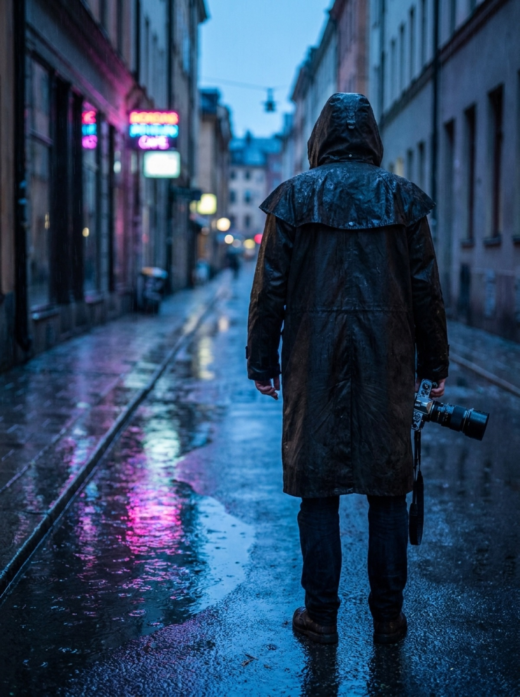

Build an AI creator that stays on-model — one locked persona across every face, scene and reel, walked through gated stages you approve.

LOCKED on-model · shot 14 of 14From one line or a reference account, Cast proposes who this creator is — voice, world, audience — and you lock each facet.
The locked foundation produces a consistent face, setting and wardrobe — the reusable, on-model world every post is shot in.
A dated calendar becomes shot-lists and reels on that same face — and you approve every gate before anything is a real post.
A rain-lit street photographer who never shows her face — only the city she frames.
Runs on YOUR Claude and YOUR tools through Switchboard. The operator holds no key, runs no model, and never sees your data. Every face, script and reel is generated on the connectors you already own.
Free core, forever · pro adds multi-persona rosters & reel batching